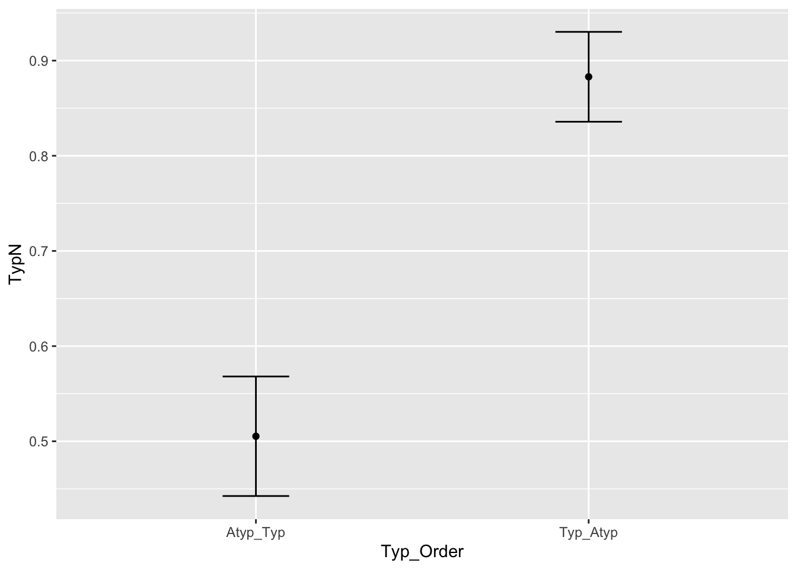
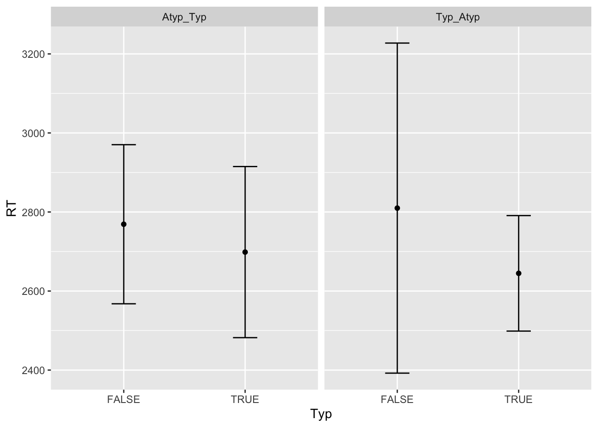

── Conflicts ────────────────────────────────────────── tidyverse_conflicts() ──
✖ dplyr::arrange() masks plyr::arrange()
✖ purrr::compact() masks plyr::compact()
✖ dplyr::count() masks plyr::count()
✖ dplyr::desc() masks plyr::desc()
✖ dplyr::failwith() masks plyr::failwith()
✖ dplyr::filter() masks stats::filter()
✖ dplyr::id() masks plyr::id()
✖ dplyr::lag() masks stats::lag()
✖ dplyr::mutate() masks plyr::mutate()
✖ dplyr::rename() masks plyr::rename()
✖ dplyr::summarise() masks plyr::summarise()
✖ dplyr::summarize() masks plyr::summarize()
ℹ Use the conflicted package (<http://conflicted.r-lib.org/>) to force all conflicts to become errors
library(magrittr)
Attaching package: 'magrittr'
The following object is masked from 'package:purrr':
set_names
The following object is masked from 'package:tidyr':
extract
library(brms)
Loading required package: Rcpp
Loading 'brms' package (version 2.22.2). Useful instructions
can be found by typing help('brms'). A more detailed introduction
to the package is available through vignette('brms_overview').
Attaching package: 'brms'
The following object is masked from 'package:stats':
ar
library(bridgesampling)
Attaching package: 'bridgesampling'
The following object is masked from 'package:brms':
bf
#pcibex readingsource("read_pcibex.R")df <-read.pcibex("results.csv")# better column namescolnames(df) <-c("Time", "IP", "Controller", "Order", "ElementNum", "Label", "Group", "PennElementType", "PennElementName", "Parameter", "Value", "EventTime", "ProlificID", "item", "Group", "Type", "Typ_Order", "DefType", "Antecedent", "Ref", "Comments")# retrieve the response timesdf_rt <- df |>subset((PennElementType =="Selector"| Parameter =="play") & Type =="critical")df_rt <- df_rt |>select(ProlificID, Parameter, item, EventTime) |>pivot_wider(names_from = Parameter, values_from = EventTime)# only select selecions and critical items# ! TODO: Check filler responses in the future.df <- df |>subset(PennElementType =="Selector"& Type =="critical")# check if left_join is working properlystopifnot(nrow(df) ==nrow(left_join(df, df_rt, by =c("ProlificID", "item"))))# join RTs and selectionsdf <-left_join(df, df_rt, by =c("ProlificID", "item"))df$DefType <-"TR"n_subj <-length(unique(df$ProlificID))n_subj
[1] 46
# number of non-answersno_answer <-nrow(subset(df, !(Value =="I1"| Value =="I2")))no_answer
[1] 1
df <- df |>subset( Value =="I1"| Value =="I2")# new column for the selection of Typdf$Typ <- (df$Typ_Order =="Typ_Atyp"& df$Value =="I1") | (df$Typ_Order =="Atyp_Typ"& df$Value =="I2")# Check mean proportion of typical answer as a function of conditiondf %>%group_by(Typ_Order) %>%summarize(Typ =mean(Typ =="TRUE"), n =length(Value))
# A tibble: 2 × 3
Typ_Order Typ n
<chr> <dbl> <int>
1 Atyp_Typ 0.505 368
2 Typ_Atyp 0.883 367
Automatically converting the following non-factors to factors: DefType, Typ_Order
avgs
DefType Typ_Order N TypN sd se ci
1 TR Atyp_Typ 368 0.5052906 0.6147353 0.03204529 0.06301544
2 TR Typ_Atyp 367 0.8829784 0.4614595 0.02408799 0.04736823
# do a plot with geom point and geom line and error bars using avgsggplot(avgs, aes(Typ_Order, TypN)) +geom_point() +geom_line() +geom_errorbar(aes(ymin = TypN -1.96*se, ymax = TypN +1.96*se), width =0.2)
`geom_line()`: Each group consists of only one observation.
ℹ Do you need to adjust the group aesthetic?

# get the Response time from selection time and play timedf$Selection <-as.numeric(df$Selection)df$play <-as.numeric(df$play)df$RT <- df$Selection - df$play# percentage of really long response timesnrow(subset(df, RT >10000)) /nrow(df)
[1] 0.01360544
# filter out really long response times and get the averagesrt_avgs <- df %>%filter(RT <10000) %>%summarySEwithin(., measurevar ="RT", withinvars =c("Typ", "DefType", "Typ_Order"), idvar ="ProlificID", na.rm =TRUE)
Automatically converting the following non-factors to factors: Typ, DefType, Typ_Order
`geom_line()`: Each group consists of only one observation.
ℹ Do you need to adjust the group aesthetic?
`geom_line()`: Each group consists of only one observation.
ℹ Do you need to adjust the group aesthetic?

# read typdatadiff to include in the modeldiff <-read_csv("TypDataItemDiff.csv")
Rows: 16 Columns: 5
── Column specification ────────────────────────────────────────────────────────
Delimiter: ","
chr (1): noun_en
dbl (4): item, 1, 2, Diff
ℹ Use `spec()` to retrieve the full column specification for this data.
ℹ Specify the column types or set `show_col_types = FALSE` to quiet this message.
df$item <-as.factor(df$item)diff$item <-as.factor(diff$item)# join differences in typicality and our experient datastopifnot(nrow(left_join(df, diff, by ="item")) ==nrow(df))df <-left_join(df, diff, by ="item")df$Typ_Order <-as.factor(df$Typ_Order)contrasts(df$Typ_Order) <-contr.sum(2) /2# fit models with interaction and no interactions.m.int <-brm(Typ ~ Typ_Order * Diff + (Typ_Order * Diff | ProlificID) + (Typ_Order * Diff | item),data = df,family =bernoulli("probit"),chains =4, cores =8,iter =12000, warmup =2000, control =list(adapt_delta =0.99),file ="Typ_int_full", save_pars =save_pars(all =TRUE))m.noint <-brm(Typ ~ Typ_Order + Diff + (Typ_Order + Diff | ProlificID)+ (Typ_Order + Diff | item),data = df,family =bernoulli("probit"),chains =4, cores =8,iter =12000, warmup =2000, control =list(adapt_delta =0.99),file ="Typ_no_int_full", save_pars =save_pars(all =TRUE))
# compare model using bridgesampling# compute log marginal likelihood via bridge sampling for H0H0.bridge <-bridge_sampler(m.int, silent =TRUE)
Warning: 1080 of the 15000 log_prob() evaluations on the proposal draws
produced -Inf/Inf.
# compute log marginal likelihood via bridge sampling for H1H1.bridge <-bridge_sampler(m.noint, silent =TRUE)
Warning: 680 of the 20000 log_prob() evaluations on the proposal draws produced
-Inf/Inf.
# compute percentage errors to compute an approximate percentage error of the estimates:(H0.error <-error_measures(H0.bridge)$percentage)
[1] "74%"
(H1.error <-error_measures(H1.bridge)$percentage)
[1] "15%"
# compute Bayes factor, H! is preferredBF <-exp(H0.bridge$logml - H1.bridge$logml)print(BF)
[1] 0.0009334539
# strong evidence against H0 (the null hypothesis) and in favor of H1# compute posterior model probabilities (assuming equal prior model probabilities)post1 <-post_prob(H0.bridge, H1.bridge)print(post1)
H0.bridge H1.bridge
0.0009325834 0.9990674166
# 99 percent probability for H1 to be true if their initial probabilities are 0.5-0.5# Maybe one can use other experiments to give a more informed probability# compute posterior model probabilities (using specified prior model probabilities)# post2 <- post_prob(H0.bridge, H1.bridge, prior_prob = c(.6, .4))# print(post2)